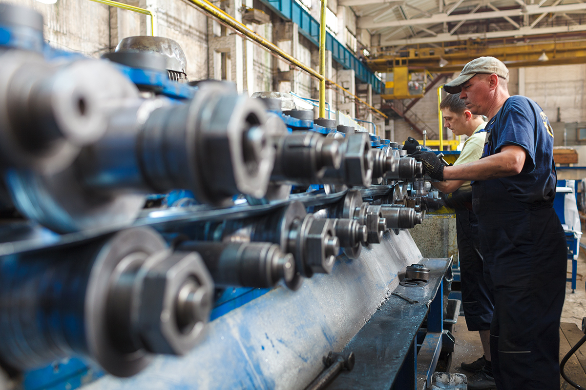
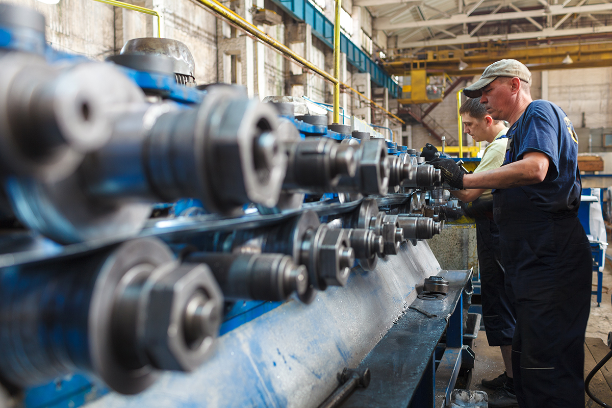

Eng
Рус
Пропускная способность предприятия позволяет производить до трех миллионов погонных метров армирующего профиля в месяц, что обеспечивает бесперебойность поставок в моменты пиковых сезонных нагрузок наших клиентов. На современном оборудовании налажена возможность изготовления профилей любой конфигурации и сложности, что дает возможность иметь в арсенале все возможные позиции. Профиль производится методом холодного профилирования тонколистовой холоднокатаной оцинкованной стали. Вся продукция регулярно подвергается проверке на соответствие регулирующим нормативным документам.
Наиболее распространенные системы – смотрите каталог армирующих профилей.
 
